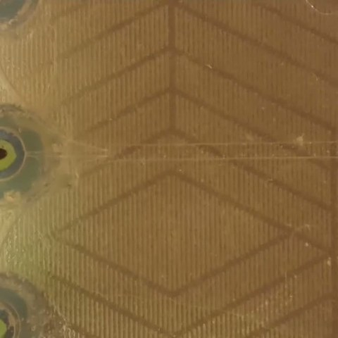
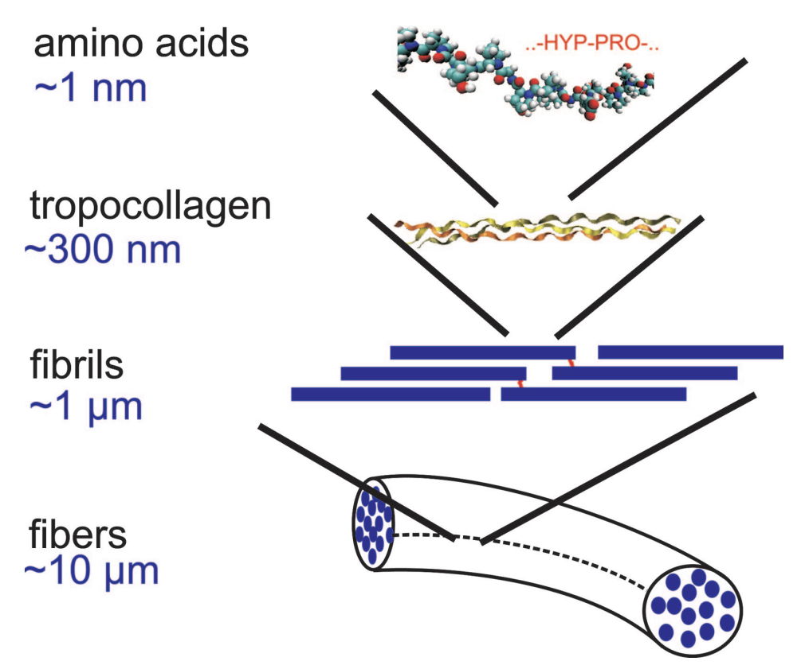
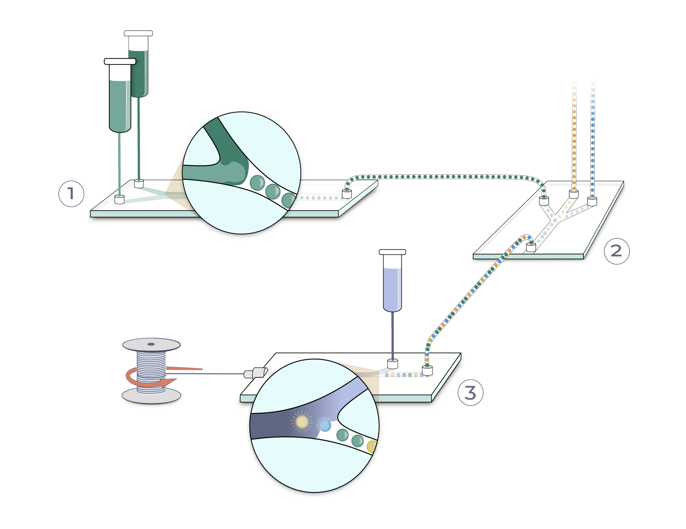
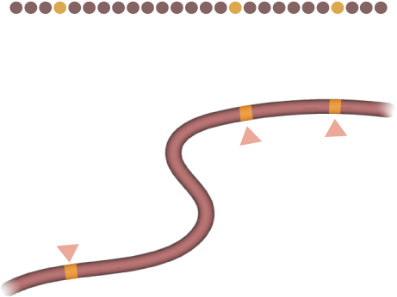

Impossible Fibers
We make protein fibers using nature's manufacturing strategies
01
Research & development
We run R&D projects on protein fibers with funders and partners.
02
Robotic sensor systems
We're developing protein-fiber sensors for robotic touch.
03
Open science platform
We publish our tools, methods and data in four areas.
See the four areas ↓
Learning from nature
Spiders, mussels and velvet worms keep fiber proteins unreacted until they need them


StoreKeep the protein condensed and unreacted.
SortMove it into place while it's still fluid.
TriggerTurn it into a fiber at the right place and time.
Read the story: Humanity Makes Noodles. Nature Makes Machines. ↗
Illustrations © Gretchen Hooker / Pixel Naturalist.
Open science platform
Four areas we work on in the open

1AI-assisted chip designDesigning microfluidic chips for protein dopes with AI.Page coming

2Predictive fiber modelsFrom a protein's molecules to its fiber's strength.Page coming

3Bio-inspired manufacturingEncapsulated dopes: store, sort, spin.

4The future of fibersFibers that sense and compute: our white paper.Page coming
Work with us
We partner with researchers, industrial teams and funders on protein fibers.
Get in touch